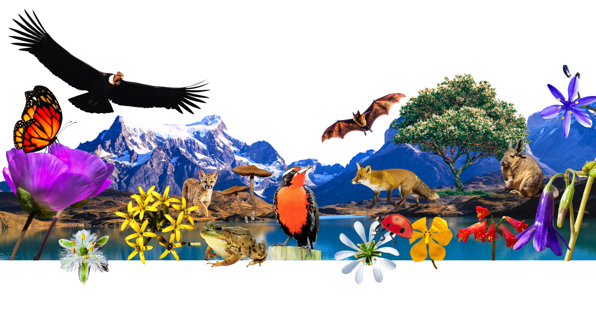

Juntamos ideas, organizaciones, instituciones y empresas para hacer esto realidad.

Cuatro actores, una misma plataforma georreferenciada.
Presentan su idea en el mapa, buscando a los otros actores que puedan hacerla realidad.
Proponer en el mapaEncuentran ideas para "apadrinar": ponen a disposición conocimiento y suman vinculación con el medio.
Ver ideas para apadrinarDescubren proyectos verificados para financiar, alineados con su estrategia de impacto.
Ver oportunidadesNo solo validan: muestran interés real en desarrollar el proyecto, técnica y/o financieramente.
Entrar al panel Qinti
Qinti
Qinti
Qinti